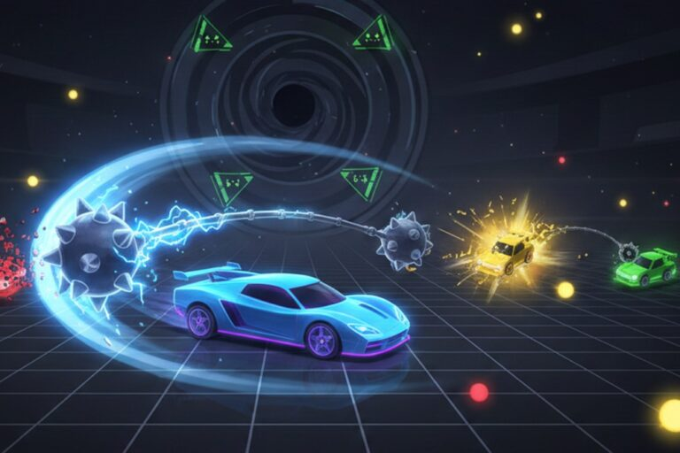
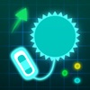
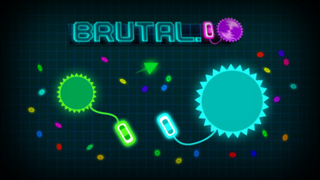

Introduction
Brutal.io is a fast‑paced, physics‑driven arena brawler where players pilot neon‑lit cars and swing massive spiked flails to obliterate opponents. Unlike typical .io games that rely on simple shooting, Brutal.io emphasizes melee combat, momentum, and spatial awareness. The flail’s length and speed change based on the energy you collect, creating a dynamic “yo‑yo” mechanic that rewards timing and positioning. The arena is dotted with energy pellets, black‑hole zones, and AI Sentinels that add layers of risk and reward. Its vibrant neon graphics, smooth controls, and “easy to learn, impossible to master” feel have made it a favorite among competitive gamers looking for quick, adrenaline‑filled matches.
Getting Started

Getting started with Brutal.io is instant: open https://brutal.io/ in any modern browser, and you’re dropped into the lobby. No registration or download required. The default controls are: Mouse – Aim the direction your car faces. W / Up Arrow – Accelerate forward. S / Down Arrow – Brake or reverse. Space – Detach the flail for a short burst of extra speed (the “Flicker” move). Hold Space while moving to keep the flail detached and close. A / D or Left/Right – Steer left or right while moving. F (or click the “Recall” button) – Pull the flail back toward your car instantly. When you spawn, your flail is tiny. Drive toward the glowing energy pellets scattered across the map; each one you collect increases your flail’s size and damage. Keep an eye on the leaderboard in the top‑right corner—your rank is based on total mass, which grows with kills and pickups. Avoid the black‑hole zones at the center; they can trap you. Begin by staying on the outer rim, grabbing pellets, and practicing the “Flicker” technique to build confidence before venturing into the heart of the arena.
Basic Tips
1. **Learn the Flicker first.** Press Space to detach your flail; while it’s floating you move ~30% faster. Example: when you spot a lone pellet cluster near the south wall, detach and dart to it before a larger opponent can intercept. 2. **Stay on the outer rim early.** The map’s edges are littered with low‑value pellets that safely grow your flail. A beginner who grabs five outer pellets will have a medium‑sized flail without any risk of being cornered by a black‑hole. 3. **Perfect your recall timing.** Tap F (or the Recall button) when your flail reaches its maximum swing radius; this snaps it back instantly and deals a burst of damage to anyone caught in the path. If you recall too early, you waste momentum. 4. **Target “reachable” opponents.** Check the leaderboard; if you’re rank 8 and a rank 6 player is slightly larger, chase them. They’re close enough for a quick kill, but not so massive that their flail out‑ranges yours. 5. **Avoid the central black‑hole zone until you’re big.** The pulsing black hole pulls you in, and the AI Sentinels can shred a small flail. Wait until your flail turns red (the “Equalizer” state) before entering.
Advanced Strategies

1. **Back‑Door Recall.** Place your flail near a chokepoint (e.g., the south entrance of the central arena) and drive away. A larger opponent chasing you will inevitably stand between you and the stationary weapon. Hold the Recall key; the flail rockets back at full speed, delivering massive damage before they can react. This works best when you’re slightly smaller and need a single decisive blow. 2. **Wall‑Bounce (Ricochet) Shots.** Aim your flail at a nearby wall and release it just before max swing length. The flail glances off the wall and continues on a new trajectory, surprising opponents who think they’re out of range. Practice on the flat edges to predict the exact rebound angle. 3. **Flicker‑Momentum Combo.** Rapidly tap Space to keep the flail detached while you weave, reducing drag and increasing speed. When an enemy is directly ahead, release the flail at that moment, converting your speed into a high‑damage momentum strike. 4. **Sentinel Zoning.** Lure AI Sentinels by entering their patrol zones, then retreat toward an opponent. Sentinels will chase you, creating a moving hazard that forces the enemy to dodge both your flail and the AI, opening up kills.
Pro Tips

1. **Predict recall windows.** Experienced players release the flail just before reaching max range, forcing a delayed recall. By noting when they tap Space, you can anticipate the flail’s return path and dodge or counter‑attack. 2. **Control the Equalizer.** When your flail turns red, you become a high‑value target. Use the red aura to zone out smaller players, but stay mobile—standstill in the center invites coordinated attacks. 3. **Micro‑aim for bounce angles.** Instead of aiming at the wall directly, offset your aim by a few degrees to produce a sharper rebound that reaches unexpected angles. 4. **Harvest Sentinels tactically.** Let a Sentinel lock onto you, then quickly circle behind a foe. The Sentinel’s projectile will hit the opponent while you stay safe, turning AI into an extra weapon.
Conclusion
Brutal.io blends fast‑paced melee combat with physics‑driven flail mechanics, delivering a unique competitive experience that rewards timing, positioning, and strategic play. Whether you’re a casual player picking up energy pellets or a seasoned competitor chasing the top spot, the arena offers endless moments of chaos and triumph. Jump into https://brutal.io/, experiment with the techniques above, and start climbing the leaderboard today.